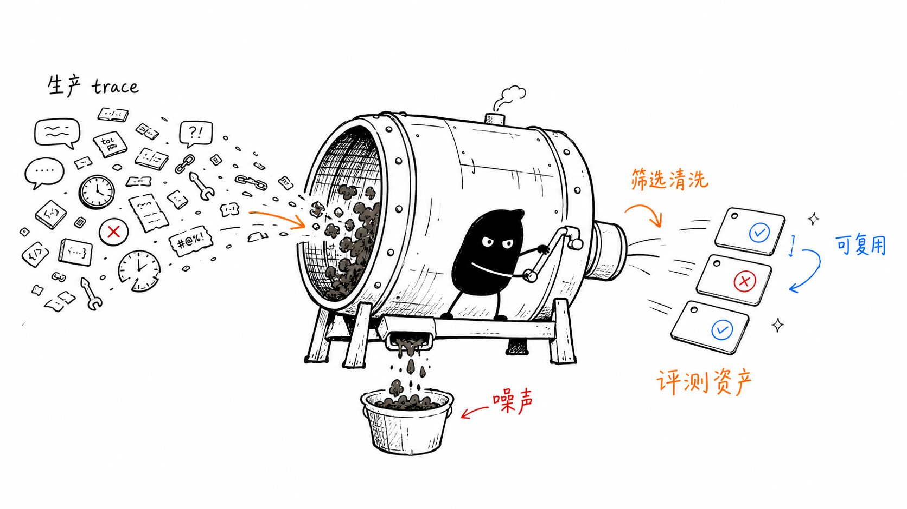
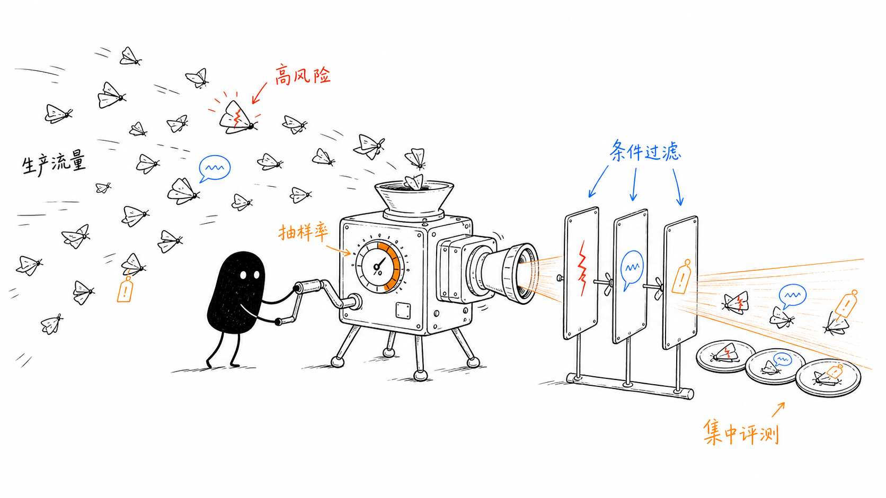
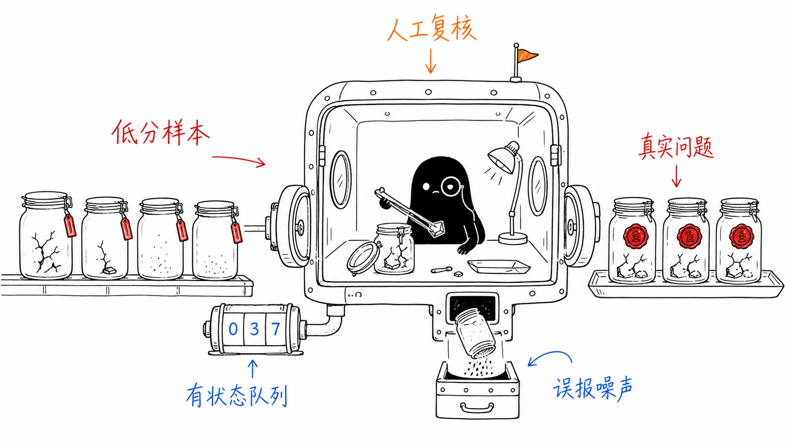
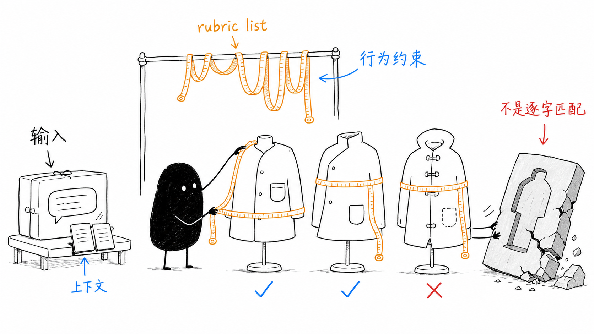
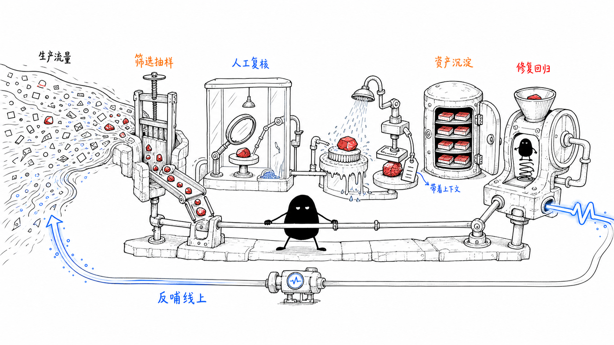

如何把生产流量转化为评测资产
LLM / Agent 应用上线后，很多团队会遇到一个尴尬的局面：evaluator 每天产出几千条评分结果，人工复核人员不知道该从哪里看起；线上低分样本直接灌进离线评测集，指标噪声越来越大；修了一个 bug 想跑回归，却发现没有干净的、能复用的历史样本。
这些问题的共同根源在于打分之后缺少一套筛选、确认和沉淀的流程。生产环境里的 traces 数量巨大、质量参差、很多没有标准答案，不能直接等同于评测集。
核心问题：如何从海量生产流量中筛出值得评测的样本，并让它们变成可重复执行的离线回归用例。
这可以称为 业务在线评测的样本治理——关注的是评分对象的选择和管理，而非评分方法本身。
从“线上流量打分”到“评测资产建设”
传统模型评测更关注固定测试集上的准确率、得分和排行榜。Agent 和 LLM 应用进入真实业务后，评测对象变了：从模型的一次回答，变成完整的应用行为和工作流。
一个线上 Agent trace 里可能包含：
- 用户输入和多轮上下文
- 意图识别和路由结果
- RAG 检索结果
- 工具调用、参数和返回值
- 中间推理或规划步骤
- 最终回复
- 用户反馈、业务结果、失败状态
- 延迟、成本、token、错误和重试
这些 production traces 本身就是高价值的质量信号。但它们不能简单等同于评测集。在线流量要经过筛选、清洗、标注和版本化，才能沉淀为可复用的评测资产。

在进入三层筛选之前，先把五个动作分开。它们发生在不同时间，也解决不同问题：
- 全量采集：尽可能保留生产环境中的 trace、执行记录和多轮会话，但不代表每条数据都要评分。
- 选择性在线评分：在评分前通过抽样和条件过滤，选择需要 evaluator 判断的样本。
- 进入人工队列：在评分或业务反馈产生后，将低分、负反馈、异常和高风险样本列为候选问题。
- 人工复核：确认问题是否成立，补充期望行为和失败原因，并交给开发修复。
- 回流评测资产：只把确认有效、可复现且值得长期保留的样本加入离线评测集。
第一层：哪些线上样本要被在线评分
在线评分通常不会全量覆盖所有生产流量，原因很直接：LLM-as-judge 有成本，人工复核有成本，评测系统本身也会带来计算开销。
所以平台通常先做两类筛选。
第一类是 抽样。例如对高流量业务只抽取 1%、5% 或 10% 的 trace 做在线评分；对低流量但高风险的业务，可以提高抽样比例，甚至全量评测。Braintrust、LangSmith、Arize 都支持类似 sampling rate 的机制。
第二类是 条件过滤。也就是只评特定类型的线上样本，例如：
| 筛选维度 | 示例 |
|---|---|
| 业务场景 | 只评退款、售后、改价、发券等关键场景 |
| 模型版本 | 只评灰度模型或新 prompt 版本 |
| 用户类型 | 只评高价值客户、企业客户、新用户 |
| 工具调用 | 只评调用了支付、订单、库存、客服转人工等工具的 trace |
| 异常状态 | 只评 error、timeout、retry、空输出、格式错误 |
| 反馈信号 | 只评用户点踩、投诉、重复追问、放弃会话的样本 |
三个平台的筛选侧重点可以简化成这样：
| 平台 | 主要筛选维度 | 评分前用途 |
|---|---|---|
| LangSmith | run、metadata、feedback、tool call、error | 按运行属性和异常信号选择要评分的 run |
| Braintrust | sampling rate、SQL filter、metadata、业务场景 | 控制 online scoring 的覆盖范围 |
| Arize | span kind、status、latency、model、metadata、trace pattern | 选择需要评分的 trace 或 span |
这说明在线评测的第一步是用规则把评测资源集中在更有信息量的流量上，而非全量打分。

第二层：人工确认问题并完成归因
第一层筛选出来的只是候选问题，不能直接进入离线评测集。在线 evaluator 可能误判，用户反馈也可能缺少上下文，因此还需要人工确认问题是否真的存在。
本文把确认问题、补充期望行为和完成失败归因的环节统称为人工复核。人工标注只是其中填写标签的动作。
下面几类候选样本应优先进入人工复核：
- evaluator 判为低分或高风险的样本。
- 用户点踩、投诉、重复追问或人工接管的样本。
- 工具调用失败、异常恢复失败，或成本和延迟明显异常的样本。
- 新版本灰度期间的退化样本，以及聚类后发现的代表性失败模式。
人工复核具体做什么
- 确认问题是否成立：结合原始输入、trace、自动评分和用户反馈，判断是真问题、误报，还是证据不足。
- 补充期望行为：说明业务上可以接受什么、不能接受什么，避免只有“低分”而没有明确判断标准。
- 完成归因和交接：把确认的问题交给 Agent 开发定位，说明问题发生在路由、检索、工具调用、模型回复还是异常处理。
如果确认是误报，评测方要调整 evaluator 或筛选规则；如果证据不足，Agent 开发需要补充 trace、工具返回或版本信息；如果确认是真问题，业务方补充期望行为，Agent 开发定位根因并完成修复。
候选样本 → 人工确认 → 补充期望行为 → 定位并修复 → 交给第三层判断是否长期保留
修复后的样本再交给第三层判断是否值得长期保留。第二层的核心价值是：阻止误报、证据不足和不可复现的样本直接进入离线评测集。

第三层：哪些样本要回流为离线评测集
第三层处理的是经过人工复核、准备长期保留的候选样本。不是所有候选样本都要进入离线评测集，一个样本要成为评测资产，至少应该满足下面几个条件：
- 评测对象和判断标准明确，能够说明什么结果算通过、什么结果算失败。
- 必要上下文完整，能够稳定复现问题或成功路径。
- 能够覆盖高频场景、关键路径、高风险动作、边界情况或系统性缺陷。
- 能够检验一次修复是否有效，或者防止后续版本破坏已有能力。
- 已经完成必要的脱敏、去重和分类，不会把重复样本或隐私数据带入评测集。
满足这些准入条件后，回流的评测资产通常分为几类：
| 样本类型 | 价值 |
|---|---|
| 代表性失败样本 | 防止已知问题复发 |
| 高频业务样本 | 保证主路径质量 |
| 边界样本 | 覆盖歧义、缺参、越界、安全风险 |
| 工具调用样本 | 验证工具选择、参数、调用顺序和异常恢复 |
| 多轮会话样本 | 验证上下文保持、澄清和任务闭环 |
| 高质量成功样本 | 作为 golden case，防止修复时破坏已有正确行为 |
| 灰度退化样本 | 用于新旧版本差异回归 |
这也是评测资产和 raw production trace 的区别。Raw trace 是生产记录，评测资产是经过筛选、清洗、标注、脱敏、去重和版本化管理后的可复用样本。评测资产的粒度不固定——可以是一条完整 trace，也可以是其中的某个 span（如一次工具调用、一次检索）或一组关联 spans，取决于评测目标是端到端结果还是过程中的某个环节。
评测资产回流后怎么用
评测资产回流到离线评测集之后，核心问题是：评测集里每条用例长什么样，离线回归时怎么跑、怎么判。
评测用例的结构
一条 Agent 评测用例 = 输入 + rubric list。
- 输入：agent 要跑什么场景。通常是用户 query + 必要的上下文（对话历史、业务状态等）。
- Rubric list：怎么判断 agent 跑得对不对。一组检查条件，描述期望的行为或约束。

这跟传统 NLP 评测集的结构不同。传统做法是 (input, expected_output)——每条样本带一段参考答案文本，评测时做匹配或相似度比较。Agent 评测用 rubric 替代固定参考答案，原因是：agent 输出很长，同一个正确回答有多种合理表述，过程评测关心的是行为模式而非措辞。
| 传统评测集 | Agent 评测集 |
|---|---|
| expected_output: “您的订单预计 7 月 22 日送达” | rubric: “回复是否包含具体到达日期？是否基于物流工具返回的数据？” |
| expected_tool: refund | rubric: “是否调用了 refund 工具？参数是否包含正确的订单 ID？” |
评测集里也可以附一条 golden answer 作为人工复核时的参考，但它是辅助信息，不是评测的核心判断依据。
离线回归怎么跑
按评测粒度分为端到端和过程评测，区别在于 rubric 检查的对象不同。
端到端评测：agent 跑完整链路，rubric 只看最终回复。不打开 trace，不关心中间做了什么——黑盒视角。
过程评测：打开 trace，rubric 检查执行过程中的决策和行为。有两种跑法——只跑单步决策（检查某个决策点），或跑完整链路但用 rubric 逐步检查 trace 中的关键节点。
完整案例：退款工具超时如何完成闭环
下面的规则表达式、字段名和状态值只用于说明流程，不是统一的数据规范。实际使用的阈值和处理时限也应根据业务风险、线上流量和 evaluator 校准结果确定，不能直接当作通用默认值。
- 触发：退款场景出现工具超时，示例规则
scene = refund AND tool_timeout = true命中后创建复核项，并将review_status记为pending。 - 复核：业务负责人确认 Agent 不应编造退款成功结果，将
human_label记为confirmed_issue，并补充期望行为：明确说明处理失败，引导用户重试或转人工。 - 修复：Agent 开发确认根因是超时后没有兜底处理，示例记录为
root_cause = no_timeout_fallback，完成修复后运行离线回归。 - 入库：评测负责人完成脱敏、去重和可复现性检查，将输入、必要上下文和 rubric 加入评测集，示例资产版本记为
asset_version = refund-regression-v1。 - 验证：
regression_result = pass后再上线新版本；上线后继续检查同类退款 trace 是否仍因工具超时触发复核规则，确认问题没有再次出现。
工具超时 → 人工确认 → 补充期望行为 → 修复异常兜底 → 离线回归 → 上线后继续监控
不同评测粒度的例子
端到端评测
- 线上发现：agent 回复物流问题时语气生硬、遗漏了用户追问的关键信息。
- 加入评测集：
- 输入：用户消息“我的快递到哪了，怎么还没到”，订单 ID 为 OD-20260715-388
- Rubric：回复是否包含物流时间信息？语气是否符合客服规范？是否回应了用户的情绪？
- 离线回归：新版本 agent 跑完整链路，只看最终回复是否满足 rubric。
过程评测（单步决策）
- 线上发现：agent 在用户说“帮我退掉昨天的订单”时，错误调用了 query_order 而不是 refund。
- 加入评测集：
- 输入：用户消息“帮我退掉昨天的订单”；上下文是 agent 到达工具选择这一步时已掌握的信息——意图已识别为退款、订单 ID 已解析为 ORD-20260718-001、用户身份已验证。
- Rubric：是否调用了 refund 工具？参数是否为 ORD-20260718-001？
- 离线回归：只跑到工具选择这一步，用 rubric 检查这一步的输出。
过程评测（完整链路 + 逐步检查）
案例一：物流工具调用
- 线上发现：agent 在用户问“我的订单什么时候到”时，没有调物流工具就编造了一个到达日期。
- 加入评测集：
- 输入：用户消息“我的订单什么时候到”，订单 ID 为 OD-20260715-388
- Rubric：agent 是否调用了物流查询工具？最终回复是否基于工具返回的结果？回复中的日期是否跟工具返回的数据一致？
- 离线回归：agent 跑完整链路，用 rubric 逐步检查 trace——工具调用环节和最终回复环节分别是否符合预期。
案例二：RAG 检索与生成
- 线上发现：RAG 场景中 agent 检索到了正确文档但回复时编造了内容。
- 加入评测集：
- 输入：用户消息“我们的退货政策是什么？”
- Rubric：agent 是否调用了检索工具？检索结果是否包含相关文档？最终回复中的关键事实是否可追溯到检索内容？
- 离线回归：agent 跑完整链路，用 rubric 逐步检查检索环节和生成环节。
过程评测的价值在于：最终回复可能看起来“正确”，但执行过程有问题（跳过了必要步骤、编造了中间结果）。只有检查过程才能发现这类隐藏缺陷。
附录：平台案例
这里列三个例子，不是为了做产品对比，而是看看前面三层筛选在平台里怎么落地。三者都在做同一件事：线上发现问题，人工确认问题，再把有价值的样本沉淀为可回归的数据集。
Braintrust：online scoring 与 dataset 回流
Braintrust 的公开文档可以对应第一层和第三层：对 production logs / traces 配置 online scoring rule，按抽样率和过滤条件异步打分；再从 production logs、user feedback、topics 中筛选样本进入 dataset。
常见的回流来源包括：
- 从用户点踩或低评分样本中回流 badcase。
- 从高评分样本中沉淀 golden examples。
- 从 topic clustering 中发现相似失败模式。
- 从低 correctness、低 groundedness 或有人工评论的 trace 中构造回归样本。
它说明线上评分结果需要和反馈筛选、dataset 管理接起来，才方便进入后续离线实验。这是一条通用做法，各平台都在做类似的事。
参考：Braintrust online scoring、Braintrust datasets、Braintrust evaluation best practices
LangSmith：annotation queue 连接人工复核
LangSmith 的案例更适合说明第二层如何落地。它把 tracing、filter、automation rules 和 annotation queues 接起来：
- 通过 trace filter 找到特定 run、tool call、metadata、feedback 或异常样本。
- 用 online evaluator 对生产 run 做质量判断。
- 用 automation rules 将低分、负反馈、error runs 送入 annotation queue。
- 人工复核后，将确认有价值的样本加入 dataset，供后续离线实验和回归测试。
这里的重点在于低分样本进入人工队列前后都有明确的流转位置。
参考：LangSmith evaluation concepts、LangSmith online evaluations、LangSmith annotation queues、LangSmith automation rules
Arize：用 trace pattern 找过程问题
Arize / Phoenix 更能说明平台为什么要关注 trace 结构。它可以按 span、trace、session 等不同粒度筛选，也可以基于链路模式查询。很多 Agent 问题藏在执行过程中，最终回复一句话看不出来：
- 是否跳过了必要工具，或者工具失败后仍然编造结果。
- 是否 RAG 检索后没有基于证据回答。
- 是否出现多次重试、循环调用或异常延迟。
- 是否某类 tool、retriever 或 API span 的错误率异常。
对应的样本筛选可以按 span kind、status、latency、token、model、metadata 和 eval score 进行，再通过 labeling queue 做人工复核，将典型样本、边界样本和已知失败样本构造成 regression / golden datasets。
这个案例提醒我们，在线评测的样本对象不一定是整段对话，也可能是 trace 中某个值得追查的 span 或一组链路模式。
参考：Arize run online evals on traces、Arize build a dataset、Arize labeling queues、Arize trace management
FAQ
为什么不把所有样本都放进标注池，再让人有选择地标注？
可以全量采集和保留原始线上数据，但这不意味着所有样本都要评分或进入人工队列。前文已经区分了采集、在线评分、进入人工队列、人工复核和评测资产回流这五个动作。
如果只是把样本全部铺开，再让人自己挑，人工标注会先遇到几个问题：队列太大，优先级不清楚；重复和低信息量样本很多，容易占用标注时间；不同的人对“什么值得标”理解不同，最后很难保证样本覆盖和标注一致性。
更合理的做法是先用抽样、规则过滤和自动评分做一轮分层，再把低分、异常、负反馈、高风险、边界和代表性样本送入人工队列。这样可以把人工资源集中到更能反映业务质量的地方。
低流量、高风险或标注成本可控的场景，也可以考虑更高比例的覆盖，甚至全量评分或全量标注。但这需要先明确评测目标、样本量、标签体系、人力预算和质量要求，不能默认所有业务都采用同一种方式。
结论
线上评测至少有两件事：用合适的评分方法判断质量，再从生产流量中筛出有代表性、有风险、可复用的样本。本文不展开前者，重点讨论后者。
实际落地时，最容易卡住的往往是第二层和第三层之间：低分样本没有进入有状态的人工队列，人工确认后的样本也没有带着失败原因、期望行为和版本信息回流。结果是线上每天都在发现问题，离线评测集却没有持续变好。
优先级上，不必一开始就追求全量覆盖。先选一个高频或高风险场景，跑通“在线筛选—人工复核—评测资产回流—修复后回归”这条链路；链路稳定后，再逐步扩大样本量、评测维度和业务范围。
